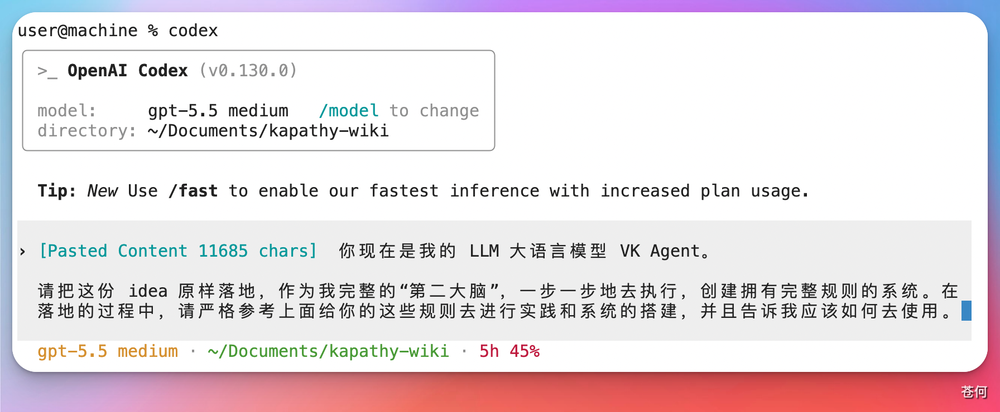
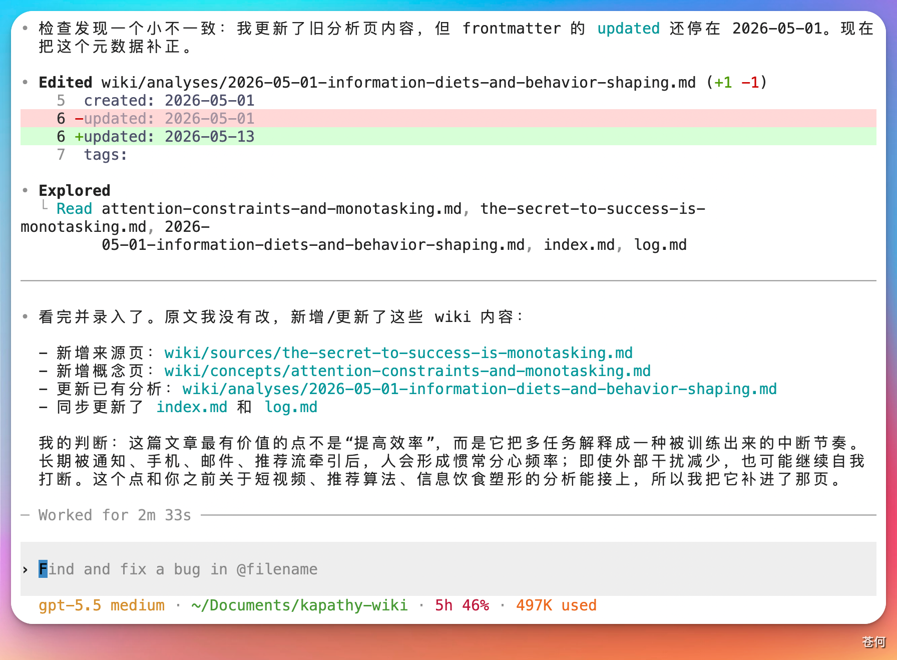

大部分人使用大模型处理文档都停留在 RAG 模式（检索增强生成，Retrieval-Augmented Generation）。这是当前 AI 行业最主流的知识管理范式：上传文件，提问时系统检索相关片段，让大模型基于这些片段生成回答。NotebookLM、ChatGPT 的文件上传，以及几乎所有的企业级知识库走的都是这条路。
前段时间，AI 领域的著名研究者 Andrej Karpathy 提出了一个新想法。他认为 RAG 的主要问题在于：每一次提问，模型都要从零开始重新发现知识。如果你问了一个需要综合五篇文档的问题，RAG 会检索、拼接、生成；如果你明天再问同样的问题，它会重复整个过程，没有任何积累，也没有任何记忆。本来可以建立关联的知识，却在一次又一次的反复查询中被浪费掉了。
Karpathy 给出的解决方案是 LLM Wiki。他描述的系统分为三层：
- 原始资料层 — 负责收集论文、文章、播客、网页等素材。大模型对这一层只读不改。
- Wiki 层 — 大模型拥有这一层的完整所有权。它负责编写 Markdown 文件、目录、摘要、实体概念、比较分析和综述，创建页面、更新页面，并维护交叉引用。我们只需要负责阅读。
- Schema 层 — 一个配置文件，例如对于 Codex 来说就是
AGENTS.md，对于 Cursor 来说就是.cursorrules。告诉大模型这个 Wiki 的结构规范、命名约定和工作流程，并在使用过程中共同迭代这份文件。

本篇介绍如何参考 Karpathy 的理念，在 Obsidian 里借助 Codex 搭建一套 LLM Wiki 知识库。
1. 参考 Karpathy 的 GitHub 仓库#
首先找到 Karpathy 分享的 LLM Wiki 原始设计文档，了解他的设计理念：
https://gist.github.com/karpathy/442a6bf555914893e9891c11519de94f
2. 在 Obsidian 里创建 Wiki 仓库#
在本地新建一个 Obsidian 仓库，然后把以下提示词发给 Codex：
你现在是我的 LLM Wiki Agent。
把下面这份 idea 文件原样落地，作为我完整的第二大脑，一步一步地执行，
创建拥有完整规则的系统。落地过程严格参考以下 GitHub 仓库的内容：
https://gist.github.com/karpathy/442a6bf555914893e9891c11519de94fCodex 会根据内容帮你创建一套符合 LLM Wiki 理念的本地知识库结构：

创建完成后，仓库里会生成以下文件和文件夹：
concept/raw/logs/wiki/AGENTS.mdlog
这些都符合 Karpathy 描述的 LLM Wiki 架构。
3. 如何使用#
安装 Obsidian Web Clipper#
首先安装浏览器插件 Obsidian Web Clipper。它的作用是将浏览器中的文章、视频、网页内容自动提取并下载到本地仓库，方便让 Codex 进行处理和拆分。

抓取文章到 raw 文件夹#
找一篇想纳入知识库的文章，用插件将其保存到仓库里的 raw/ 文件夹（在 Karpathy 的理念中，raw/ 专门存放原始素材）。点击"添加到 Obsidian"即可。

让 Codex 完成入库#
打开 Obsidian，让 Codex 读取这篇文章：

Codex 会自动阅读内容，按照 LLM Wiki 的理念进行拆分，新增摘要、实体、关联引用等页面。完成后，它会告诉你具体新增了哪些内容，这篇文章就正式入库了。

持续迭代#
后续想研究同一主题的更多内容，重复以下流程即可：
- 用 Obsidian Web Clipper 把新文章保存到
raw/ - 让 Codex 将其拆分成多个 Wiki 页面，并更新相关文件的交叉引用
- 随着内容积累，知识之间的关联会越来越清晰，形成真正结构化的第二大脑